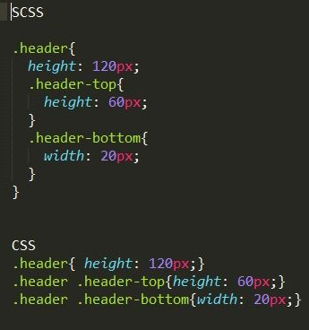
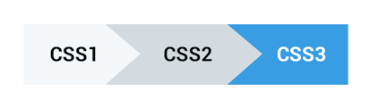

Separar el código CSS del código HTML
El enfoque de CSS es servir para definir la capa de presentación, es decir, la parte relacionada con el aspecto. Es algo que cualquier estudiante suele tener claro cuando está aprendiendo CSS, ya que al enseñar HTML probablemente se haya insistido, pero que siempre conviene reforzar.
En el código HTML colocamos el contenido, es decir, qué debe visualizarse, mientras que con CSS definimos la presentación, es decir, cómo debe visualizarse. Esto nos lleva a una serie de usos de CSS que debemos de respetar como buenas prácticas.
- Lo adecuado cuando trabajamos con CSS es escribir el código en ficheros independientes, que tendrán extensión .css. Cada cosa en su lugar!
- No conviene colocar código CSS por tanto dentro de archivos HTML. Debemos evitar colocar estilos en etiquetas style dentro del propio código HTML.
- Por supuesto, mucho menos aconsejable es colocar estilos en los atributos "style" de las etiquetas HTML.
Evolución del lenguaje CSS
Las hojas de estilo en cascada llegaron al mundo de la web bastante más tarde que el lenguaje HTML. Aunque fue propuesto en 1994 el primer estándar no llegaría hasta prácticamente entrado 1997. Sería CSS 1.
Obviamente, CSS 1 supuso un gran avance para el mundo del desarrollo de páginas web, pero lo cierto es que para entonces los diseñadores se habían acostumbrado a mezclar el contenido con la presentación, por medio del uso de etiquetas HTML que estaban presentes y seguían funcionando en los navegadores. Además CSS 1 había sido presentado con bastantes carencias, lo que hizo que se tuviera que presentar un nuevo estándar rápidamente. Así fue como sería liberado como recomendación CSS 2 pasado apenas un año, en 1998.
A partir de este punto el mundo de los estándares abiertos para la web tuvo un parón generalizado. No solo CSS, sino HTML y otros lenguajes como Javascript. CSS 2 tuvo una revisión publicada como CSS 2.1 en la que añadieron algunos selectores nuevos, pero pasaron años antes de la presentación de una nueva versión. Con todo entramos en una etapa oscura en la que CSS no llegó a cubrir totalmente sus objetivos
La aparición de CSS 3 sólo se materializó en el año 2014 con el movimiento de HTML 5. Vendría a aportar soluciones a la mayoría de las necesidades de los diseñadores y a permitir finalmente cubrir el objetivo principal del lenguaje, la separación del contenido de la presentación. No obstante cabe decir que CSS 3 se presentó por medio de un nutrido grupo de especificaciones, que han ido mejorándose e incrementándose hasta la fecha, por lo que no es tanto un lanzamiento puntual, sino una continua mejora del estándar a diversos niveles.

Hoy podemos decir que CSS cubre las necesidades de los diseñadores, más aún después de la aparición de CSS Flexbox, que permite agregar una facilidad enorme a la hora de colocar los elementos en la página. Junto por supuesto del último aporte a las especificaciones de CSS Grid System, que por fin ha aportado un completo y versátil sistema de rejilla a la web, mediante el cual los diseñadores web disponen de herramientas verdaderamente potentes para posicionar los elementos en la página, de manera independiente a como estos aparezcan en el código HTML.